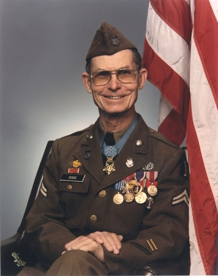
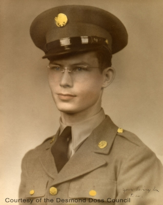
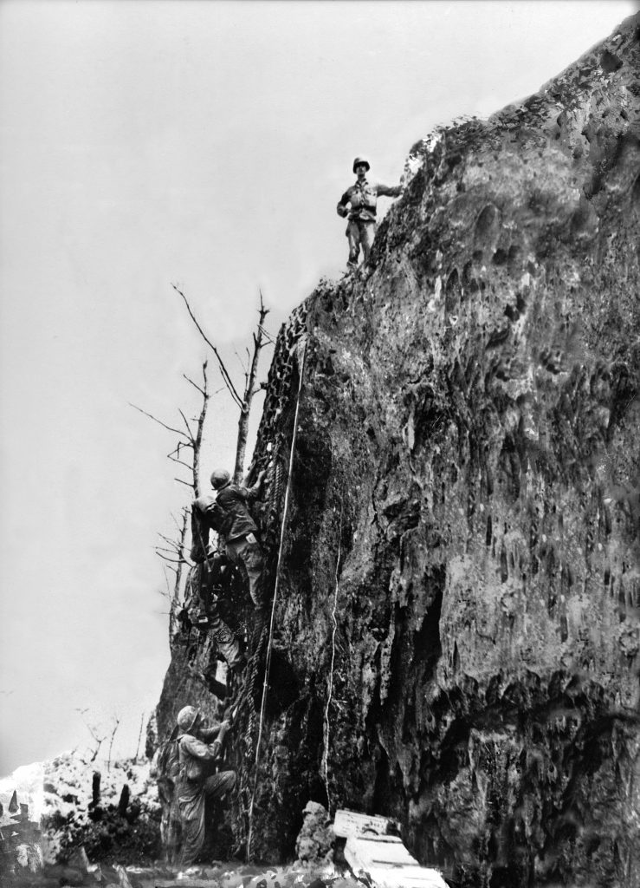

Biography
Doss was born in Lynchburg, Virginia in February 7, 1919, son of William Thomas Doss, a carpenter, and Bertha E. (Oliver) Doss. Desmond Doss enlisted in April 1942, but refused to kill or carry a weapon into combat because of his personal beliefs as a Seventh-day Adventist. He consequently became a medic, and while serving in the Pacific theatre of World War II he helped his country by saving the lives of his comrades, at the same time adhering to his religious convictions. Doss was wounded three times during the war, and shortly before leaving the Army he was diagnosed with tuberculosis, which cost him a lung. Discharged from the Army in 1946, he spent five years undergoing medical treatment for his injuries and illness.Desmond Doss died in 2006 at his home in Piedmont, Alabama, after being hospitalized for breathing troubles, the same day as another Medal of Honor recipient, David Bleak. He was buried in Chattanooga, Tennessee's National Cemetery.

The Real Story
On April 1, 1942, Desmond Doss joined the United States Army. Little did he realize that three and a half years later, he would be standing on the White House lawn, receiving the nation's highest award for his bravery and courage under fire.
Of the 16 million men in uniform during World War II, only 431 received the Congressional Medal of Honor. One of these was placed around the neck of a young Seventh-day Adventist, who during combat had not killed a single enemy soldier. In fact, he refused to carry a gun. His only weapons were his Bible and his faith in God.
President Harry S. Truman warmly shook the hand of Corporal Desmond Thomas Doss, and then held it the entire time his citation was read aloud to those gathered outside the White House on October 12, 1945. "I'm proud of you," Truman said. "You really deserve this. I consider this a greater honor than being president."
Read more

Battle of Okinawa
The Battle of Okinawa, codenamed Operation Iceberg, was a major battle of the Pacific War fought on the island of Okinawa by United States Army and United States Marine Corps forces against the Imperial Japanese Army. The initial invasion of Okinawa on 1 April 1945 was the largest amphibious assault in the Pacific Theater of World War II. The Kerama Islands surrounding Okinawa were preemptively captured on 26 March by the 77th Infantry Division. The 82-day battle lasted from 1 April until 22 June 1945. After a long campaign of island hopping, the Allies were planning to use Kadena Air Base on the large island of Okinawa as a base for Operation Downfall, the planned invasion of the Japanese home islands, 340 mi (550 km) away. The United States created the Tenth Army, a cross-branch force consisting of the U.S. Army 7th, 27th, 77th and 96th Infantry Divisions with the 1st, 2nd, and 6th Marine Divisions, to fight on the island.
Read more